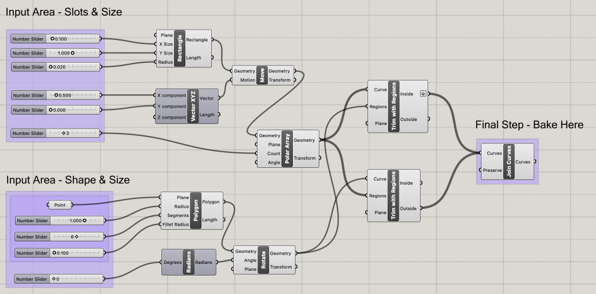
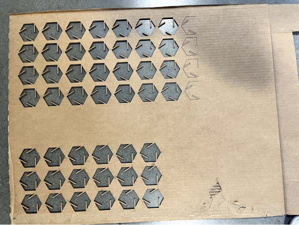
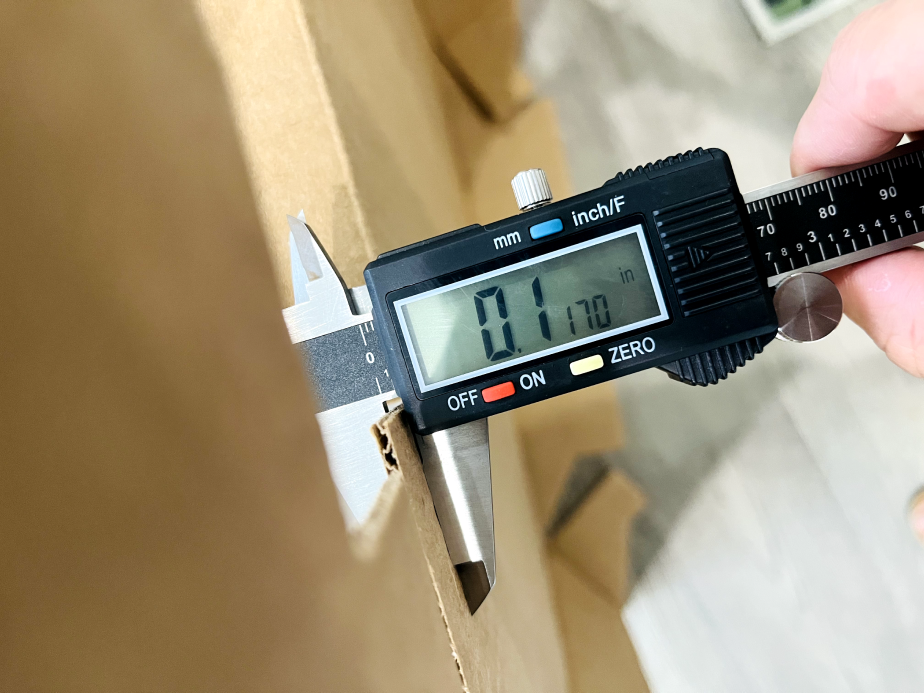
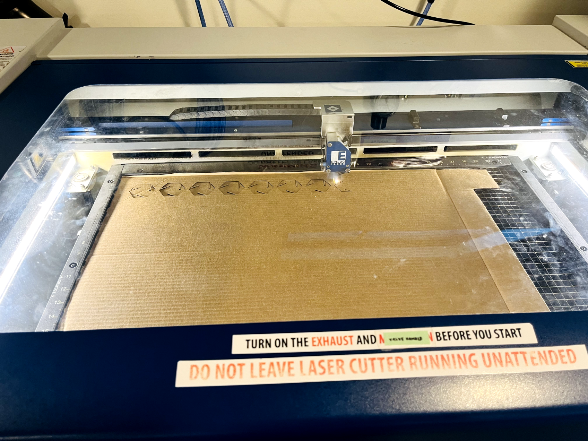

A2: Parametric Modelling with Grasshopper!
Here is my finished press fit construction kit.

For this assignment, I chose hexagon as the only base geometry to create a press-fit kit,
without using others like octagons in the last assignment.

I utilized Grasshopper to create the desired model, and I used the polygon definition with
6 segments and radius 1 to create 30+ hexagons that can fit into my cardboard.
Here is the grasshopper model for my hexagon kit. Some inputs, such as the slots' depth,
thickness, and angle, can be easily controlled. I can also easily modify the polygon inputs, such as the overall size,
the number of segments, and the fillet radius. I also add radians for the polygon to control the overall angles in case
of further use. I set 0 degrees for this hexagon, and I found if I set the segment to 4, which is the square would not
be horizontal, and this radians component could help fix the degree.

When setting the laser print, I forgot to change the default horizontal and vertical piece size,
so the laser didn’t entirely cut all the pieces I wanted. I did a second run to cut the rest pieces.


The thickness of the cardboard I used is 0.117" measured by the caliper. To make a relatively tight fit between two pieces
pressed together, I chose the slot width to be 0.1". (The kit I made for last assignment had very loose fit after using the cardboard thickness as the slot width.)

On the laser cutter, I used the following settings: speed 30, power 100, freq 50.

Documentation for Assignment 2:
Rhino file
grasshopper file
Adobe Illustrator fileAcknowledgement:
The tutorial for this week's assignment demo from Junchao TA helps greatly!
I also want to thank all the classmates who sharing the mill status in the Discord! It helps a lot!
Return to home